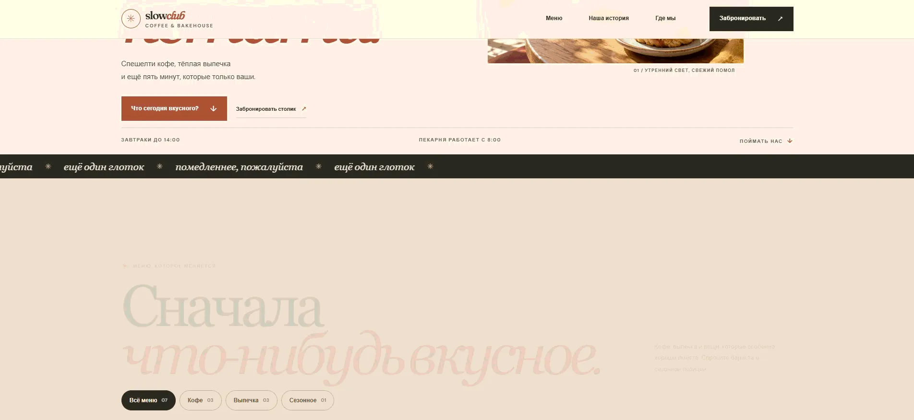

Первый экран
Обещание опыта перед выбором блюда.
Выбранный экран концепта кофейни: тёплая палитра, акцент на атмосфере и простой переход к меню.
Посмотреть детали ↓
Обещание опыта перед выбором блюда.
Понятная группировка основных позиций.
Контент остаётся читаемым на телефоне.
Демонстрационный фрагмент для портфолио студии СВЕТ.